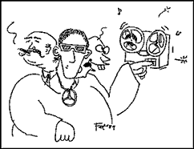

|
Lunch With The Fatman | 1, 2, 3
"The Three Faces of Production"
Hi. Sit down. What are you having? Welcome to Lunch with The Fat Man.
Here is a letter I didn't get recently:
Dear Fat Man,
My question is this: We know what a manager is. He's the guy who makes tapes of us on his jam box at the back of the club. But what exactly is a producer?
Sincerely,
Marsha Lamp,
Bassist, the Snowflakes from Hell
P.S. I am a big fan of your column. I worship the very ground you walk on, and wish to bear your children, wreck your marriage, and slap you with a fat paternity suit as a result of my misguided affection. Keep up the good work.
I wish I had actually received this letter, for I would have liked to have answered as follows:
Dear Marsha:
What is a producer? Someone who wants to be called a producer. There are three types of producers:
Producer type 1: "Gold Connections:" This type of producer knows the music business inside and out, and knows people in it. Business is his game, and he can do you lots of good by exposing "big shots" in the business to your sounds. He may have some ideas also, although they are generally vague and dogmatic, such as "all bands need a female vocalist”. "Songs about sheep are hot," or "everyone's going to want to hear Salsa this year." The reason for this, though, is that picture of what is "hot" is based on practical scientific observations rather than wimpy artistic feel. Perhaps his best connection, his brother, the president of Driving Records, mentioned over breakfast that he'd sign a band with a female vocalist this week. Or perhaps a competing producer just had a huge hit with a sheep song. Or he has inside information that a Salsa movie is in production.
The key to getting and keeping a relationship with a type 1 is to bear in mind that he is a prospector and you are a hole in the ground. The more gold he can get out of you, the more effort he can justify investing in your business. In other words, when he hands you that contract with the big percentage carved out for himself, you can't storm out yelling, "Rip off! Rip off!” You simply have to reach an agreement in which you use his abilities to establish an equitable to lucrative career, and in which he can turn your success into big bucks for himself.
 Producer type 2: "Golden Ears:" His job is making things sound good. He may or may not know about the music business, but he knows about music, and can easily translate between artist's ideas and engineer's terminology. You'll know him by the conversation -- it's usually about musical specifics: reel, orchestration, sounds, notes, techniques, equipment. He may write, sing, play instruments, arrange, engineer, or all of the above, or he may just kibitz, but every time he changes something about your music, it sounds better, better, better. If you can communicate well with him, it will seem that he's pulling ideas out of your head and putting them onto tape. The more he has to do with your music, the better it sounds, the more firm its direction and feel, the more intense your style, but the less you can claim the result as your very own achievement.
The key to getting along with this type is to know in your own mind how much control and credit you are willing to place in another person's hands. If it's none, then do both of you a favor and don't hire him.
Producer type 3: "Golden Goose Egg:" By far the most common type of producer is someone who wants to be called a producer, and that's it. These people know less about music and the music industry than you do. They will sometimes bring a little money or artistic advice to a band, but they want a large piece of the pie and expect full credit that implies that they guided you. We call these people "Pahdoocers." If a pahdoocer knows financing, however, and/or can provide you with significant funding, he has the potential to become an "executive producer."
In dealing with a pahdoocer, be very clear to them about your value of their opinions. If pahdoocers can be made to understand their low artistic status, they will either go away or continue to bring you money with no hope of influencing your music. That's when they earn the legitimate title of executive producer, and become a valuable member of the team.
There you have it, Marsha. Perhaps a better question would have been "What is a good producer?" A good rule of thumb is to only call someone your producer if they can do your musical career enough good to deserve the title. If you need someone to feed your cat while you're on the road, and he wants to be paid $1.34 a week and be called a producer, then make him your producer. He may turn out to be better than most.
Say, this was great. Let's have lunch more often.

|